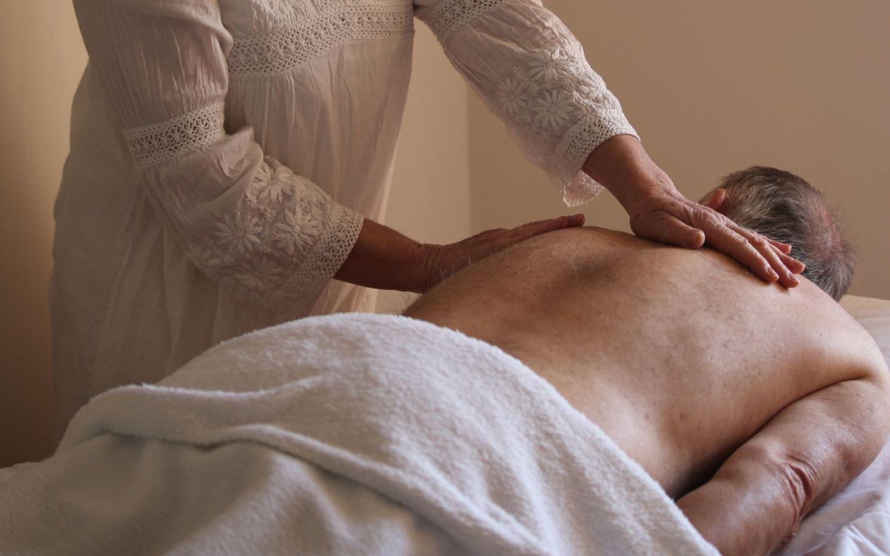
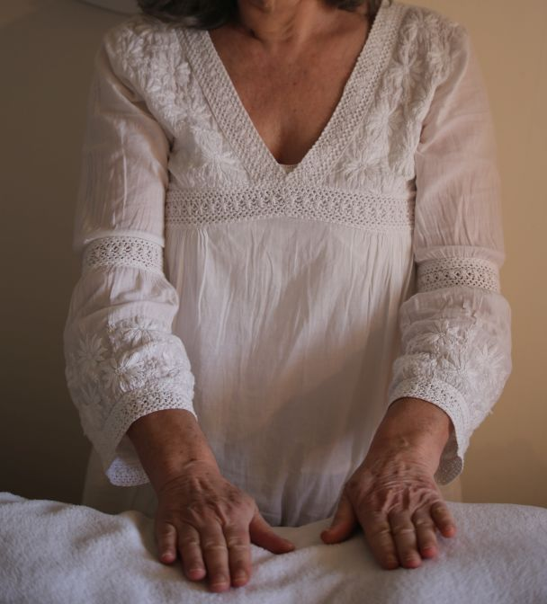

Soins esséniens

Les soins égypto-esséniens sont une invitation à revenir à soi, à se reconnecter à son essence profonde et à retrouver l’harmonie entre le corps, le cœur et l’âme.
Hérités de sagesses anciennes, ces soins œuvrent à rétablir la circulation de l’énergie, à alléger ce qui entrave et à ramener paix, clarté et ancrage intérieur.
À travers une approche énergétique subtile, ils accompagnent la libération des mémoires, apaisent les blessures intérieures et permettent de réaligner les différentes dimensions de l’être.
Les soins m’apportent de la lumière,
de la sérénité et la satisfaction de donner aux autres du bien-être, de les accompagner, de les aider sur leur chemin de vie, en apaisant leur cœur et en pacifiant leur être.
Ma quête est de savoir comment aimer plus, comment aimer mieux. Ces soins sacrés m’ont permis de découvrir une connexion à soi, un univers de douceur, de respect, d’amour et de bienveillance envers autrui, et cela en toute humilité.
Dans une présence bienveillante et guidée par le cœur, le praticien se fait canal pour laisser circuler les énergies et soutenir en douceur le chemin de transformation et d’éveil.
Les soins esséniens sont une forme de thérapie énergétique qui vise à rééquilibrer le corps, l’esprit et l’âme. Ils agissent sur les corps subtils et l’harmonisation des chakras. Ils peuvent aider à soulager le stress et à favoriser un bien-être général.
Par l’énergie de la lumière transmise à travers les mains du thérapeute, de micro-massages sont pratiqués sur les points énergétiques et les circuits, avec des huiles en fonction du soin abordé.
Ces accompagnements viennent en complément d’un suivi médical et ne s’y substituent pas.

C'est avec gratitude
que je vous accompagne sur le chemin sacré de guérison et d’équilibre intérieur.
Les soins peuvent se vivre en présence ou à distance.
Je propose un accompagnement en trois séances pour permettre à la guérison de prendre place pleinement.
Les tarifs :
En présentiel
- 1h30 soin + échange :: 75 euros.
En distanciel
- 30 à 40 min soin + échange :: 55 euros.
- Forfait 3 soins :: 110 euros.
Les informations personnelles recueillies lors du soin sont strictement confidentielles.
Contact :
Téléphone : 06 72 87 91 29
Email : isabelle.escolano@wanadoo.fr